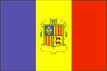
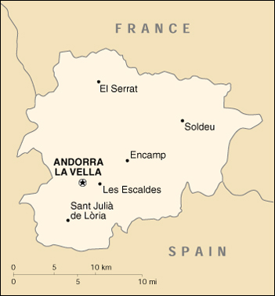

{kind=link}


| Andorra |  |
|
|  | |
| Introduction |
Background: Long isolated and impoverished, mountainous Andorra has achieved considerable prosperity since World War II through its tourist industry. Many immigrants (legal and illegal) are attracted to the thriving economy with its lack of income taxes.
| Geography |
Location: Southwestern Europe, between France and Spain
Geographic coordinates: 42 30 N, 1 30 E
Map references: Europe
Area:
total:
468 sq km
land:
468 sq km
water:
0 sq km
Area - comparative: 2.5 times the size of Washington, DC
Land boundaries:
total:
120.3 km
border countries:
France 56.6 km, Spain 63.7 km
Coastline: 0 km (landlocked)
Maritime claims: none (landlocked)
Climate: temperate; snowy, cold winters and warm, dry summers
Terrain: rugged mountains dissected by narrow valleys
Elevation extremes:
lowest point:
Riu Runer 840 m
highest point:
Coma Pedrosa 2,946 m
Natural resources: hydropower, mineral water, timber, iron ore, lead
Land use:
arable land:
4%
permanent crops:
0%
permanent pastures:
45%
forests and woodland:
35%
other:
16% (1998 est.)
Irrigated land: NA sq km
Natural hazards: snowslides, avalanches
Environment - current issues: deforestation; overgrazing of mountain meadows contributes to soil erosion; air pollution; waste water treatment and solid waste disposal
Environment - international agreements:
party to:
Hazardous Wastes
signed, but not ratified:
none of the selected agreements
Geography - note: landlocked
| People |
Population: 66,824 (July 2000 est.)
Age structure:
0-14 years:
15% (male 5,382; female 4,883)
15-64 years:
72% (male 25,463; female 22,837)
65 years and over:
13% (male 4,160; female 4,099) (2000 est.)
Population growth rate: 1.22% (2000 est.)
Birth rate: 10.58 births/1,000 population (2000 est.)
Death rate: 5.27 deaths/1,000 population (2000 est.)
Net migration rate: 6.9 migrant(s)/1,000 population (2000 est.)
Sex ratio:
at birth:
1.06 male(s)/female
under 15 years:
1.1 male(s)/female
15-64 years:
1.11 male(s)/female
65 years and over:
1.01 male(s)/female
total population:
1.1 male(s)/female (2000 est.)
Infant mortality rate: 4.08 deaths/1,000 live births (2000 est.)
Life expectancy at birth:
total population:
83.46 years
male:
80.56 years
female:
86.56 years (2000 est.)
Total fertility rate: 1.25 children born/woman (2000 est.)
Nationality:
noun:
Andorran(s)
adjective:
Andorran
Ethnic groups: Spanish 43%, Andorran 33%, Portuguese 11%, French 7%, other 6% (1998)
Religions: Roman Catholic (predominant)
Languages: Catalan (official), French, Castilian
Literacy:
definition:
NA
total population:
100%
male:
NA%
female:
NA%
| Government |
Country name:
conventional long form:
Principality of Andorra
conventional short form:
Andorra
local long form:
Principat d'Andorra
local short form:
Andorra
Data code: AN
Government type: parliamentary democracy (since March 1993) that retains as its heads of state a coprincipality; the two princes are the president of France and bishop of Seo de Urgel, Spain, who are represented locally by coprinces' representatives
Capital: Andorra la Vella
Administrative divisions: 7 parishes (parroquies, singular - parroquia); Andorra la Vella, Canillo, Encamp, La Massana, Escaldes-Engordany, Ordino, Sant Julia de Loria
Independence: 1278 (was formed under the joint suzerainty of France and Spain)
National holiday: Mare de Deu de Meritxell, 8 September (1278)
Constitution: Andorra's first written constitution was drafted in 1991; approved by referendum 14 March 1993; came into force 4 May 1993
Legal system: based on French and Spanish civil codes; no judicial review of legislative acts; has not accepted compulsory ICJ jurisdiction
Suffrage: 18 years of age; universal
Executive branch:
chief of state:
French Coprince Jacques CHIRAC (since 17 May 1995), represented by Mr. Frederic de SAINT-SERNIN (since NA); Spanish Coprince Episcopal Monseigneur Joan MARTI Alanis (since 31 January 1971), represented by Mr. Nemesi MARQUES OSTE (since NA)
head of government:
Executive Council President Marc FORNE Molne (since 21 December 1994)
cabinet:
Executive Council or Govern designated by the Executive Council president
elections:
Executive Council president elected by the General Council and formally appointed by the coprinces for a four-year term; election last held 16 February 1997 (next to be held NA 2001)
election results:
Marc FORNE Molne elected executive council president; percent of General Council vote - 64%
Legislative branch:
unicameral General Council of the Valleys or Consell General de las Valls (28 seats; members are elected by direct popular vote, 14 from a single national constituency and 14 to represent each of the 7 parishes; members serve four-year terms)
elections:
last held 16 February 1997 (next to be held NA February 2001)
election results:
percent of vote by party - UL 57%, AND 21%, IDN 7%, ND 7%, other 8%; seats by party - UL 16, AND 6, ND 2, IDN 2, UPO 2
Judicial branch: Tribunal of Judges or Tribunal de Batlles; Tribunal of the Courts or Tribunal de Corts; Supreme Court of Justice of Andorra or Tribunal Superior de Justicia d'Andorra; Supreme Council of Justice or Consell Superior de la Justicia; Fiscal Ministry or Ministeri Fiscal; Constitutional Tribunal or Tribunal Constitucional
Political parties and leaders:
Liberal Party of Andorra (Partit Liberal d'Andorra) or PLA [Marc FORNE]; Liberal Union or UL [Francesc CERQUEDA]; National Democratic Group or AND [Ladislau BARO SOLA]; National Democratic Initiative or IDN [Vincenc MATEU ZAMORA]; New Democracy or ND [Jaume BARTOMEU CASSANY]; Unio Parroquial d'Ordino or UPO [Simo DURO COMA]
note:
there are two other small parties
International organization participation: CCC, CE, ECE, ICRM, IFRCS, Interpol, IOC, ITU, OSCE, UN, UNESCO, WHO, WIPO, WToO
Diplomatic representation in the US:
chief of mission:
Ambassador Juli MINOVES-TRIQUELL (also Permanent Representative to the UN)
chancery:
2 United Nations Plaza, 25th Floor, New York, NY 10017
telephone:
[1] (212) 750-8064
FAX:
[1] (212) 750-6630
Diplomatic representation from the US: the US does not have an embassy in Andorra; the US Ambassador to Spain is accredited to Andorra; US interests in Andorra are represented by the Consulate General's office in Barcelona (Spain); mailing address: Paseo Reina Elisenda, 23, 08034 Barcelona, Spain; telephone: (3493) 280-2227; FAX: (3493) 205-7705
Flag description: three equal vertical bands of blue (hoist side), yellow, and red with the national coat of arms centered in the yellow band; the coat of arms features a quartered shield; similar to the flags of Chad and Romania, which do not have a national coat of arms in the center, and the flag of Moldova, which does bear a national emblem
| Economy |
Economy - overview: Tourism, the mainstay of Andorra's tiny, well-to-do economy, accounts for roughly 80% of GDP. An estimated 9 million tourists visit annually, attracted by Andorra's duty-free status and by its summer and winter resorts. Andorra's comparative advantage has recently eroded as the economies of neighboring France and Spain have been opened up, providing broader availability of goods and lower tariffs. The banking sector, with its "tax haven" status, also contributes substantially to the economy. Agricultural production is limited by a scarcity of arable land, and most food has to be imported. The principal livestock activity is sheep raising. Manufacturing consists mainly of cigarettes, cigars, and furniture. Andorra is a member of the EU Customs Union and is treated as an EU member for trade in manufactured goods (no tariffs) and as a non-EU member for agricultural products.
GDP: purchasing power parity - $1.2 billion (1996 est.)
GDP - real growth rate: NA%
GDP - per capita: purchasing power parity - $18,000 (1996 est.)
GDP - composition by sector:
agriculture:
NA%
industry:
NA%
services:
NA%
Population below poverty line: NA%
Household income or consumption by percentage share:
lowest 10%:
NA%
highest 10%:
NA%
Inflation rate (consumer prices): 1.62% (1998)
Labor force: 30,787 salaried employees (1998)
Labor force - by occupation: agriculture 1%, industry 21%, services 72%, other 6% (1998)
Unemployment rate: 0%
Budget:
revenues:
$385 million
expenditures:
$342 million, including capital expenditures of $NA (1997)
Industries: tourism (particularly skiing), cattle raising, timber, tobacco, banking
Industrial production growth rate: NA%
Electricity - production: 116 million kWh (1998)
Electricity - production by source:
fossil fuel:
NA%
hydro:
NA%
nuclear:
NA%
other:
NA%
Electricity - consumption: NA kWh (1998 est.)
Electricity - exports: NA kWh
Electricity - imports: NA kWh; note - imports electricity from Spain and France
Agriculture - products: small quantities of tobacco, rye, wheat, barley, oats, vegetables; sheep
Exports: $58 million (f.o.b., 1998)
Exports - commodities: tobacco products, furniture
Exports - partners: France 34%, Spain 58% (1998)
Imports: $1.077 billion (c.i.f., 1998)
Imports - commodities: consumer goods, food, electricity
Imports - partners: Spain 48%, France 35%, US 2.3% (1998)
Debt - external: $NA
Economic aid - recipient: none
Currency: 1 French franc (F) = 100 centimes; 1 peseta (Pta) = 100 centimos; the French and Spanish currencies are used
Exchange rates: euros per US$1 - 0.9867 (January 2000), 0.9386 (1999); French francs (F) per US$1 - 5.65 (January 1999), 5.8995 (1998), 5.8367 (1997), 5.1155 (1996), 4.9915 (1995); Spanish pesetas (Ptas) per US$1 - 143.39 (January 1999), 149.40 (1998), 146.41 (1997), 126.66 (1996), 124.69 (1995)
Fiscal year: calendar year
| Communications |
Telephones - main lines in use: 31,980 (1997)
Telephones - mobile cellular: 8,618 (1997)
Telephone system:
domestic:
modern system with microwave radio relay connections between exchanges
international:
landline circuits to France and Spain
Radio broadcast stations: AM 0, FM 15, shortwave 0 (1998)
Radios: 16,000 (1997)
Television broadcast stations: 0 (1997)
Televisions: 27,000 (1997)
Internet Service Providers (ISPs): NA
| Transportation |
Railways: 0 km
Highways:
total:
269 km
paved:
198 km
unpaved:
71 km (1994 est.)
Ports and harbors: none
Airports: none
| Military |
Military - note: defense is the responsibility of France and Spain
| Transnational Issues |
Disputes - international: none